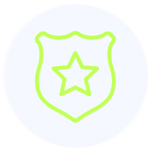
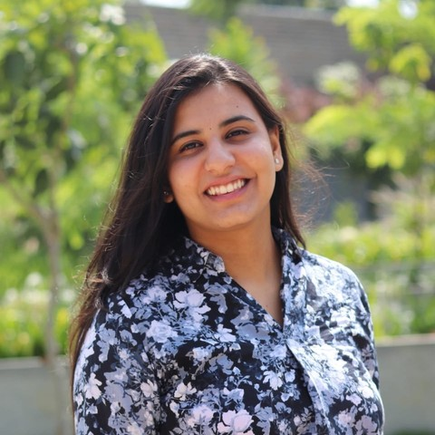
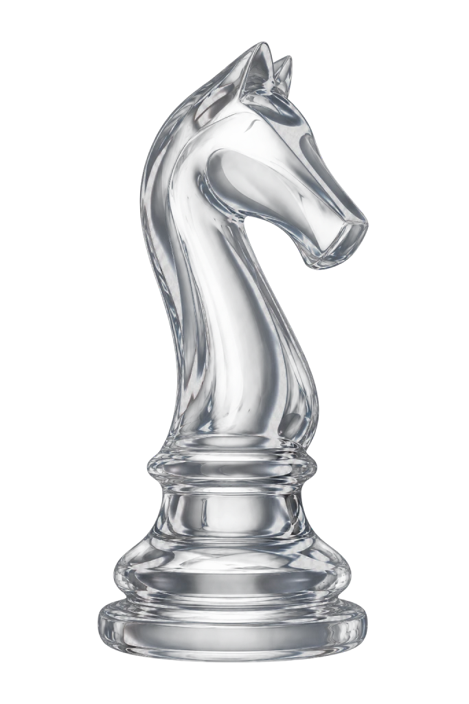
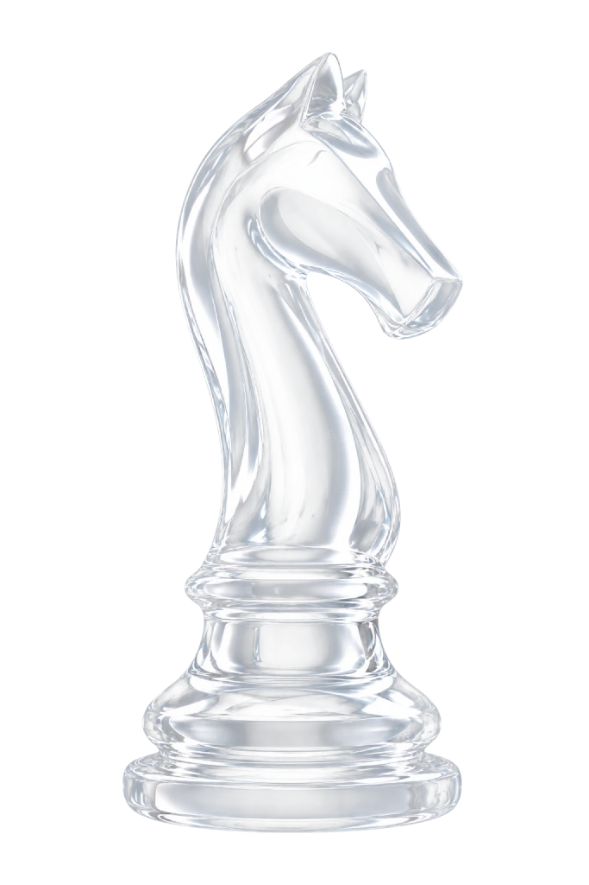
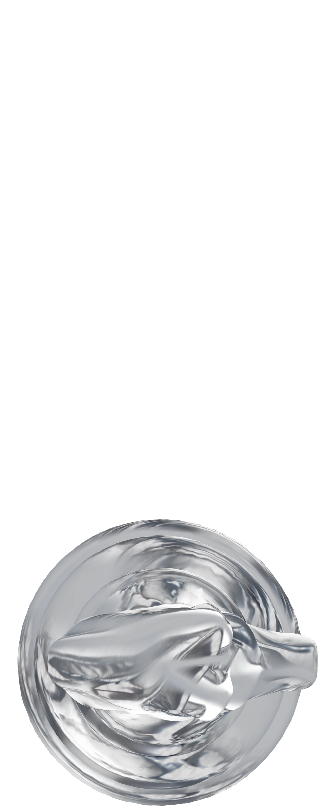

Deloitte Move The Dot
Employee Award
For Exceptional collaboration, client centricity, commitment to people, and driving change and innovation

Hi 👋 I’m Apoorva Bengaluru Sathyaprakash. You might have already guessed where I’m from! I studied as a computer science engineer, worked as a consultant at Deloitte, and now study strategic design management at NID. I work where design, tech and business meet: finding out why people behave the way they do, and turning that into products that work for them and for the business. Outside work, I’m singing, dancing and reading. If that sounds like someone you’d like on your team, let’s talk.

Employee Award
For Exceptional collaboration, client centricity, commitment to people, and driving change and innovation
Course Certification
For Being trained to run agile teams including sprint planning, stand-ups, reviews and retrospectives.
Learning Badge
For Structured problem solving, communication and adaptability, McKinsey’s way

IEEE ICAECIS 2023
For Image Caption Generation in Kannada using Deep Learning Frameworks 4 Citations | 157 Full-text views | View Paper
Orientation Workshop
For Introducing Design Thinking to over 1200+ incoming engineering students for cultivating creativity
Software Engineering
For Building theory and lab material for all prescribed course units, grounded in design thinking
Knights see the invisible, at every move through measuring, collaborating, & iterating.
Discover
Define
Ideate
Develop
Test
Deliver
Research
Build
Launch



Consulting Analyst
2023 - 2025
Consulting Intern
2023 - 2023
User Research Intern
2023 - 2023